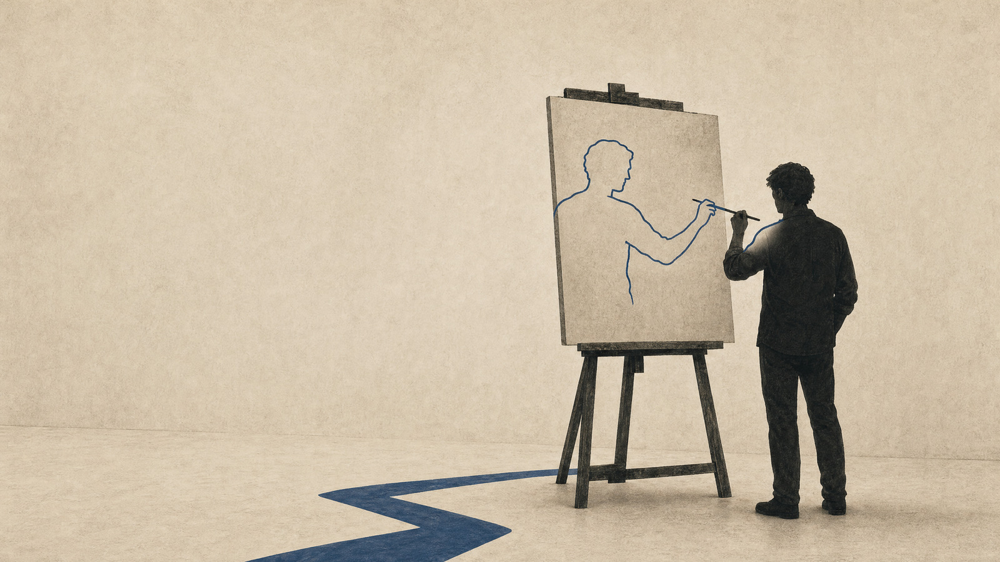
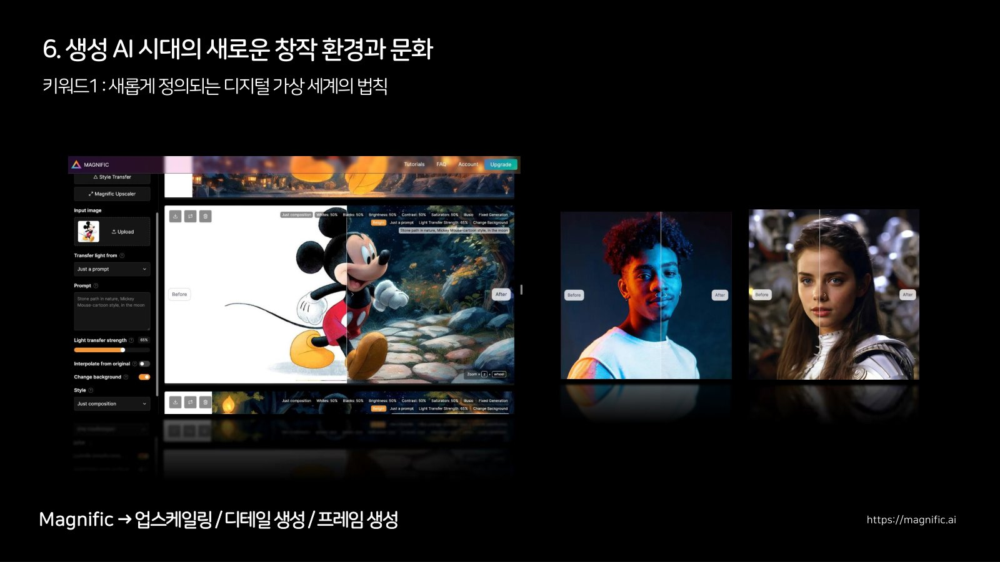
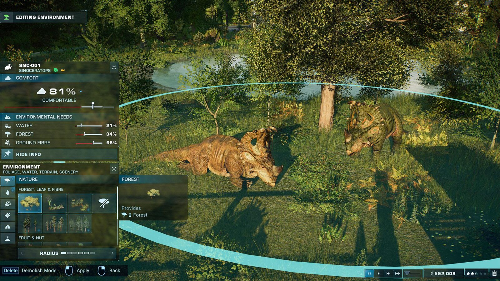
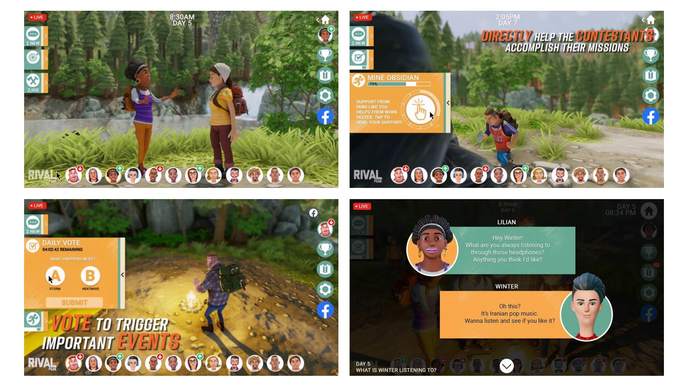
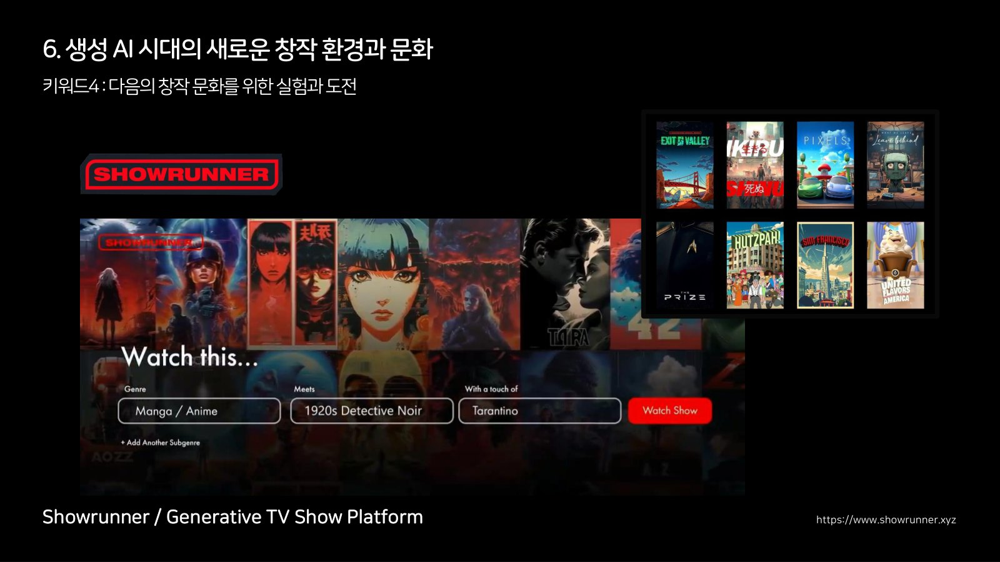

무엇을 창조하는 존재이고 싶은가자율 세계, 스스로 규칙을 만드는 세계의 등장PART 3

생성 AI는 창작의 도구를 넘어 창작의 주체 자리를 넘보기 시작했다. 사진 한 장이 원본 기억을 덮어쓰고, 사라진 게임이 다시 만들어지고, 나를 닮은 클론이 나 대신 말하는 시대다. 그렇다면 네오는 창작자인 우리인가, 아니면 새로 등장하는 AI 그 자체인가. 나는 개인이 아니라 문화에 걸겠다고 답했다. 2년이 지나 다시 읽어도 이 답은 바뀌지 않았다.
시리즈 안내 : 이 시리즈는 2024년 7월 7일 부천국제판타스틱영화제 BIFAN+ 컨퍼런스에서 한 발표 "자율 세계의 등장과 새로운 창작 환경"을 2년 뒤에 1인칭으로 다시 정리한 것이다. 이 글은 세 편 중 세 번째다.
01기억과 현실의 모호한 경계
발표의 마지막 토막은 한 장의 사진에서 시작했다. 어느 창작자가 SNS에 올린 이야기였다. 어린 시절 사진 한 장을 생성 AI에 넣어 5초짜리 영상으로 만들었더니, 실제로 일어난 적 없는 장면인데도 원래의 기억 위에 새 장면이 덮어 쓰이는 묘한 감각을 받았다는 것이다. 기억의 트리거로 기록이 생성되면, 모호했던 기억은 쉽게 덮어 쓰인다는 문장이었다. 계정의 주인은 일본의 창작자 누마쿠라 쇼고였고, 사진 속의 아기가 본인이었다. 한 사람이 유모차를 돌보는 사진이고, 영상은 드림 머신으로 만들었다고 그가 직접 적어 뒀다.
그날 나는 이 이야기를 한 단계씩 짚어 나갔다. 사진은 현실에 있었던 일이라고 믿던 시대가 있었고, 비디오로 넘어오면서 그쪽이 사실에 더 가깝다고 확신하던 때가 있었다. 지금은 영상조차 생성될 수 있으니 무엇이 사실인지를 보장할 방법이 없다. 문제는 그다음이다. 기억력은 줄어들고 인화한 사진은 바래 가는데, 디지털로 생성된 장면은 스마트폰에서 꺼내 볼수록 오히려 또렷해진다. 그 또렷함이 원래의 기억을 밀어내고 그 자리에 눌러앉는다.
사진과 영상은 오랫동안 흐려지는 기억을 보조하는 수단이었다. 생성 AI 시대에 접어들며 이 미디어들은 상시 의심받는 처지가 됐고, 때로는 의도와 무관하게 우리를 위협하는 자리에까지 섰다. 무대에서 나는 이 지점을 존재론적 질문으로 밀어 봤다. 실제 존재했던 내가 나인가, 새롭게 생성된 내가 나인가. 심지어 내가 죽은 뒤에 사람들이 기억하는 나는 어떤 모습일까.
그 창작자는 이어 붙인 두 번째 글에서 한 걸음을 더 갔다. 애초에 우리 기억 자체가 몇 분 전에 만들어진 것이라 해도 아무도 구별하지 못할 텐데, 결국 그런 SF 같은 이야기가 되어 갈 것 같다고 썼다. 같은 화면을 나는 이듬해 늦가을의 다른 자리에서 한 번 더 띄우게 된다. 그때도 이 사진을 꺼낸 이유는 같았다. 기술 이야기를 하다 말고 기억 이야기로 넘어가는 자리가 이 대목이라고 두 번 다 생각했던 것이다.
02도구는 이미 손안에 있었다
그 질문을 던지던 순간에도 도구는 빠르게 좋아지고 있었다. 무대에서 소개한 Luma의 Dream Machine은 텍스트와 이미지를 넣으면 2분 안에 1360x752 해상도의 5초짜리 클립을 내놨다. 결과물의 무작위성을 낮추면서 캐릭터와 조명, 카메라, 물리 엔진 같은 요소를 세밀하게 제어하는 쪽으로 가고 있었다.
Runway의 Gen-3는 발표 시점 기준으로 공개된 지 일주일쯤 된 참이었다. 장표에는 Gen-3 영상 세 편을 좌우로 나란히 틀어 놓고 각각의 프롬프트를 그대로 붙여 뒀다. 소행성 지대와 짙은 구름을 초고속 1인칭으로 통과하는 추격 장면, 도시의 밤에서 해변으로 수중 산호로 장소가 계속 바뀌는 꿈같은 장면. 나는 청중에게 결과 영상보다 여러 문화권의 창작자들이 SNS에 쏟아내던 사용 소감을 먼저 읽어 보라고 권했다. 도구의 스펙보다 도구를 처음 쥔 사람들의 감정이 그 시점의 진실에 가깝다고 생각했기 때문이다.

그 뒤에 한 장을 더 붙여 뒀다. 눈앞의 골목을 걸어가는 1인칭 영상 위에 고대 그리스, 수중, 겨울, 서부, 하와이, 요세미티, 사이버펑크, 떠 있는 마을 같은 프리셋을 실시간으로 갈아 끼우는 시연이었다. 캡션은 월드 스킨(World Skins)이었고, 그 옆에 AI가 이미지와 소리를 함께 생성한다고 적혀 있었다. 다만 이 장을 그날 설명한 기록은 어디에도 남아 있지 않다. 시간에 밀려 넘겼거나, 그때는 이것이 무엇이 될지 나도 몰랐을 것이다.
이듬해 원고를 손보면서 나는 이 대목에 링크 하나를 덧붙였었다. 오디세이(Odyssey)라는 팀이 실시간으로 상호작용하는 생성 영상을 시연한 화면이었다. 그때는 각주 하나였는데, 지금 보면 그 각주가 방향 표지판이었다. 영상을 한 편씩 생성하는 단계에서, 세계를 통째로 생성하고 그 안을 돌아다니는 단계로. 2년 사이 이 방향은 월드 모델이라는 이름으로 산업의 정면에 올라왔고, 나는 2025년의 다른 발표에서 월드 모델과 월드 스킨을 각각 한 챕터로 다루게 된다. 2024년의 캡션에 이미 이미지와 소리가 나란히 적혀 있었으니, 씨앗은 그때 화면 안에 들어 있었던 셈이다.
03다섯 개의 대립쌍, 그리고 뒤집힌 질문
창작의 주체를 둘러싼 논쟁을 나는 다섯 개의 대립쌍으로 정리했다. 사람의 배제인가 참여인가. 사람과의 결합인가 새로운 존재인가. 학습의 주체인가 대상인가. 창작의 도구인가 주체인가. 가치의 소유인가 도용인가. 장표에는 그 아래에 점 세 개를 찍어 뒀다. 다섯으로 끝나지 않는다는 표시였다.
그 자리에서는 이것을 두 문장으로 줄여 말했다. 이 학습된 데이터가 누구의 것이냐. 원래 나는 점점 사라지고 생성된 내가 나를 대체하는 게 아니냐. 그리고 이 고민들이 단기간에 풀릴 것이라고 기대하지는 않는다고 못 박았다. 지금 다시 세어 봐도 다섯 축 가운데 정리된 것은 하나도 없다. 예상이 맞았다고 좋아할 만한 종류의 일은 아니다.
그런데 조금만 관점을 바꿔 보면 어떨까. 나는 거기에 가설 하나를 얹었다. 지금의 논쟁은 전부 인간의 창작물을 학습한 AI를 전제로 한다. 그런데 처음부터 가상 세계에서 생겨난 것들을 학습한 창작물이 등장한다면. 인간의 저작을 거치지 않은 세계에서 자란 창작자가 나타난다면, 소유와 도용을 따지던 지금의 프레임 자체가 헐거워진다. 그때부터는 기술이 우리보다 앞서 새로운 감동을 던지는 시대가 될 수도 있다는 위기감을 나는 감추지 않았다.
그래서 매트릭스의 네오를 다시 불렀다. 네오의 각성은 세계의 코드를 읽게 되는 순간, 즉 가상 세계의 법칙을 깨닫는 순간이다. 무대에서 나는 네오가 얻은 것을 초자연적인 능력이라고 말해 놓고, 곧바로 그 말에 스스로 걸렸다. 초자연적이라는 표현이 너무 낯설다고, 실은 현실이 아닌 세계의 규칙을 깨달은 것뿐이라고 즉석에서 고쳐 말했다. 그리고 청중에게 그대로 물었다. 지금 우리가 마주하는 현실에서 네오는 창작자인 우리 자신인가, 아니면 새롭게 등장하는 AI 기술 그 자체인가. 답은 정해 두지 않았다. 다만 역사에서 몇 번이고 반복된 것처럼, 변화의 최전선에서 앞서 행동하고 실험하는 문화적 창작 집단으로 대응한다면 우리라는 존재가 네오가 될 확률이 조금은 높아지지 않겠느냐고 말했다. 재능 있는 한 사람이 나타나기를 기다리는 대신 여럿이 먼저 움직이는 쪽에 걸어 보자는 것이었고, 발표 후반부는 전부 그 방향으로 짜여 있었다.

네오 다음에는 영화 프리 가이(Free Guy)를 붙여 뒀다. 게임 속 배경 인물로 매일 같은 하루를 반복하던 주인공이 안경 하나를 쓰자, 거리 위에 코인과 상점 표지가 겹쳐 보이기 시작한다. 자기가 사는 세계의 규칙이 눈에 보이게 된다는 점에서 네오와 같은 장면인데, 각성하는 쪽이 사람이 아니라 그 세계 안에서 태어난 존재다. 이 블록도 무대에서는 지나갔다. 캡션 세 장과 영상 두 편이 발표 자료에만 남아 있다.
04첫 번째 키워드, 열화되지 않는 디지털
그 문화의 재료로 나는 네 개의 키워드를 차례로 꺼냈다. 장표에 적은 표현은 이랬다. 새롭게 정의되는 디지털 세계의 법칙. 가상 세계의 새로운 존재와 공존, 경쟁. 무한 가능성을 가진 새로운 창작 엔진. 다음의 창작 문화를 위한 실험과 도전. 두 번째 항목 끝에 붙은 경쟁이라는 말을, 나중에 글로 옮기면서 나는 공생으로 바꿔 적었다. 그때 무엇이 마음에 걸려 바꿨는지는 지금도 잘 모르겠다.
첫째는 디지털 세계의 법칙이 새로 쓰이고 있다는 것이다. 여기서 나는 관찰이 아니라 요구를 했다. 이것을 먼저 받아들이고, 네오처럼 가상 세계의 규칙을 알아낸 다음 그 안에서 초월적인 자리를 가질 수 있어야 한다고. 그러면서 그게 얼마나 어려운 일인지도 말했다. 규칙을 머리로 아는 것과 마음으로 받아들이는 것은 다르고, 10년 20년을 살아오며 몸에 붙은 것을 부정하기란 쉽지 않다.
디지털은 열화된다. 해상도는 고정돼 있고, 압축하면 손상되고, 확대하면 깨진다. 우리가 디지털 세계를 겪어 온 시간이 20년, 길게 잡아도 30년인데 나는 그 경험을 불변의 진리처럼 믿고 있었다고 그 자리에서 말했다. 생성 AI는 이 상식을 뒤집었다. 업스케일은 없던 디테일을 상상해 채워 넣고, 프레임 보간은 없던 시간을 만들어 넣는다.
장표에는 도구를 두 갈래로 나눠 붙였다. 크레아(Krea AI)와 매그니픽(Magnific)에는 업스케일링, 디테일 생성, 프레임 생성을 적었고, 엔비디아의 RTX 리믹스(RTX Remix)에는 2D 텍스처 생성, 3D 모델 생성, 리마스터링을 적었다. 앞의 둘이 화면을 다시 그린다면 뒤의 하나는 게임의 재료 자체를 다시 만든다. 디지털 가상 세계가 이제 해상도라는 개념에도, 2D 텍스처와 3D 모델과 렌더러에도 묶여 있지 않다는 뜻이었다.

옛 게임의 텍스처를 통째로 다시 생성해 리마스터하는 화면을 보여 주며, 나는 생성 AI가 시간을 초월해 과거의 창작물을 우리에게 되돌려주는 데 쓰일 수 있다고 말했다. 어렸을 때 하던 게임이, 어렸을 때 눈에 보이던 것보다 선명하게 돌아온다. 지금 와서 이름을 붙이자면 추억의 반환이라고 부르고 싶다. 이 대목을 나는 레디 플레이어 원의 그 마지막 전투 장면에 빗대어 닫았다. 2편에서 한 번 열었던 영화를 여기서 되받은 것인데, 그 장면에 몰려나오는 것은 결국 사람들이 오래 사랑해 온 캐릭터들이다. 되살아나는 것은 화질이 아니라 그 시절의 경험 쪽이다. 다만 2024년의 나에게 이것은 아직 조짐에 가까웠다. 되돌아온 것을 실제로 붙들어 본 이야기는 그때 내 손에 없었다.
05두 번째 키워드, 포스트 휴먼과의 공존
둘째는 새로운 존재들과의 공존이다. 이 무렵 토이저러스가 브랜드 필름을 하나 내놨다. 창업자 찰스 라자러스(Charles Lazarus)의 어린 시절인 1930년대를 배경으로, 그 시절 아이들이 가장 좋아하던 장난감이자 마스코트였던 기린 제프리(Geoffrey)가 등장한다. OpenAI의 Sora로 만들었다고 알려져 화제가 됐다. 나는 100퍼센트 생성된 영상이라고 들었다는 식으로, 확인하지 못한 것은 확인하지 못한 채로 말했다. 중요한 것은 제작 방식보다 결과 쪽이었다. 한 기업의 창업자가 가상 세계 안에서 영원히 다시 살아날 길이 열린 것이다. 시간과 공간을 건너뛰어 역사 속 인물과 마주하는 경험이라고 나는 적어 뒀다.

AI 에이전트라는 개념은 이 무렵 매력적인 캐릭터나 세계관과 결합해, 가상 세계 안에 영속적으로 존재하는 AI 페르소나 쪽으로 옮겨 가고 있었다. 그때까지 구현된 모습은 대체로 챗봇이었다. 다만 완성도가 올라가면 가상 세계만이 아니라 현실의 여러 상황과 맥락 속에서도 경험되는 형태로 갈라져 나갈 것으로 봤다. 대상이 인기 IP에 한정되지도 않는다. 나 자신을 포함해 누구나 그 대상이 될 수 있고, 그렇게 만들어진 또 다른 나는 지나간 시대의 인물이나 아직 오지 않은 상상 속 인물과 한자리에 섞여 지내게 될지도 모른다.
드라마들은 이 방향의 끝을 먼저 보여 줬다. 내가 좋아하는 드라마 가운데 하나인 이어즈 앤 이어즈에는 병으로 죽어 가는 가족 구성원이 나온다. 그는 죽기 전에 그 시점에 쓸 수 있던 기술로 자신의 삶을 디지털로 옮긴다. 마지막 장면에서 남은 가족이 거실의 인공지능 스피커에 대고 묻는다. 너 살아 돌아온 거야? 스피커가 대답한다. 어? 나야? 드라마는 거기서 끝난다. 나는 이 장면을 디지털 영생이라는 말의 설명으로 썼다.
또 다른 드라마 업로드에 나오는 레이크뷰는, 생전에 낸 돈에 따라 누리는 서비스의 폭과 질이 갈리는 디지털 사후 세계다. 가장 인상적이었던 장면은 주인공이 자기 장례식에 초대받아 참석하는 대목인데, 정확히는 그다음이다. 친하다고 생각했던 친구가 장례식에 오지 않은 것을 보고 배신감을 느끼며 투덜댄다. 사후 세계 이야기가 거기서 갑자기 생활의 감정으로 내려앉는다.
그리고 현실에는 이미 SNS 계정을 연동해 나의 AI 페르소나를 만들고, 그 페르소나가 나 대신 사람들을 만나게 하는 서비스가 있었다. 델파이(Delphi)라는 이름이었고, 장표에 붙인 캡션은 셀프 클로닝 서비스였다. 여기서부터가 그날 실제로 한 말이다. 이 페르소나는 수없이 복제되어 쉬지 않고 움직인다. 자신을 필요로 하는 여러 사람과 동시에 상호작용하고, 결과적으로 돈을 벌어 온다. 소유자에게 수익이 남고 그 돈으로 소유자가 생계를 유지하는 구조가 만들어진다. 그 말을 마치고 나는 청중에게 물었다. 뭔가 좀 섬뜩하지 않으신가요. 매혹과 섬뜩함이 같이 오는 이야기라는 것을 숨기고 싶지 않았다.

2년이 지난 지금 이 대목을 다시 읽는 기분은 좀 묘하다. 나는 그 섬뜩함을 지금 직접 실험하고 있기 때문이다. 이 블로그의 글은 나의 기록과 발화를 학습한 에이전트가 쓰고 있다. 2025년에 이 발표 원고를 손볼 때 나는 인트로에 AI를 활용해 작성했다는 표기를 달아 봤는데, 지금은 글 전체가 그렇게 만들어지고 그 사실이 모든 페이지 하단에 적혀 있다. 그 하단 한 줄에는 디지털 트윈이라는 말이 들어간다. 2편에서 산업 용어로 썼던 바로 그 말이 여기서는 나를 가리킨다. 무대에서 던진 존재론적 질문의 답을 나는 토론이 아니라 실험으로 찾는 쪽을 골랐다.
06세 번째 키워드, 세계를 만드는 엔진
셋째는 창작 엔진의 교체다. 앞에서 디지털 트윈을 이야기할 때의 발전 방향은 현실을 얼마나 정확히 재현하느냐, 어떻게 오류를 줄이느냐 쪽이었다. 여기서는 방향이 뒤집힌다. 상상력 그 자체가 새로운 세계를 만들어 내는 방식이 된다.
Runway는 영상 생성 모델의 다음 단계로 물리 세계를 개념적으로 이해하는 제너럴 월드 모델을 예고했다. 자세한 원리를 다 이해하지는 못했다. 다만 나는 그 안에서 수많은 AI 에이전트가 쉬지 않고 가상의 세계를 시뮬레이션하면서 스스로 상상력을 키워 가는 장면이 떠오른다고 말했다. 원리를 설명하는 대신 그림 하나로 답한 셈이다.
투자자와 연구자들은 저마다 다른 이름을 붙이고 있었다. 게임 엔진을 해체해 보는 A16Z의 글에서는 3D 크리에이션 엔진, AI 네이티브 엔진, AI 월드 제너레이터가 나왔고, 영상 생성 모델을 세계의 시뮬레이터로 설명한 OpenAI의 글에서는 월드 시뮬레이터와 서리얼 피직스가 나왔다. 장표 한 장에 이 표현들을 출처와 함께 그대로 늘어놓았다. 나는 이 용어의 난립이 불편하지 않았다. 오히려 개념이 아직 하나로 정립되지 않은 상태 자체를 흥미롭게 바라보고 있다고 말했다. 이름이 여럿이라는 것은 아직 어느 쪽으로도 정리되지 않았다는 뜻이었고, 나는 그 상태가 싫지 않았다. 머지않아 사람들이 직관적으로 이해하고 주고받을 표현으로 정리되지 않겠느냐고 덧붙이기도 했다. 그 난립은 결국 한쪽으로 수렴했다. 지금은 월드 모델이라는 말을 아무도 설명하지 않고 쓴다.
그 감각을 설명하려고 나는 쥬라기 월드 에볼루션 2를 예로 들었다. 청중에게는 그냥 사서 해보시면 된다고 권했다. 공원을 운영해 돈을 벌고 적자가 나면 망하는 경영 시뮬레이션이다. 재미있는 것은 그 안의 공룡들이다. 시노케라톱스 한 마리를 화면에 띄우면 만족도 81퍼센트, 물 21퍼센트, 숲 34퍼센트 같은 수치가 개체 단위로 그대로 나온다. 습성이 프로그래밍되어 있다는 말의 실물이 이것이다. 아직 AI 기반의 고도화된 알고리즘은 아니었지만, 그 행동을 지켜보다 보면 저 공룡은 저런 것을 즐겨 먹었구나 하는 쪽으로 시선이 옮겨 간다. 그쯤 되면 플레이라기보다 생태 관찰에 가깝다.

동물원에 가서 카메라를 꺼내 마음에 드는 장면을 찍어 친구들과 공유하는 것처럼, 1인칭 시점으로 가상의 생태를 촬영하게 되는 것이다. 세계를 만들고, 그 세계가 스스로 살아가고, 창작자는 그 안에서 장면을 발견한다. 창작 엔진이라는 말의 무게중심이 그리는 도구에서 살아가는 세계로 옮겨 가고 있었다.
나는 여기서 한 걸음을 더 밀었다. 이런 도구가 주어지면 창작자는 자기만의 가상 세계를 만들어 내고, 그 안에 자신의 정체성을 넣고, 물리 법칙 자체를 새로 정의해서 결국 어떤 세계의 창조자가 될 수 있다고. 그렇게 되면 우리 한 사람 한 사람이 날마다 새로운 지구를, 혹은 같은 시대를 저마다 다르게 해석한 세계를 만들게 될지도 모른다. 그 무렵 드라마로도 만들어진 소설 삼체 속의 가상 세계처럼 말이다.
07네 번째 키워드, 계보가 있는 실험
넷째는 이 모든 것이 갑자기 나타난 문화가 아니라는 점이다. 게임의 그래픽 연출을 제어하고 캡처해 자신만의 영화를 만드는 머시니마, 게임을 뜯어고쳐 새 규칙을 심는 MOD. 창작 도구로 설계되지 않은 것을 창작 도구로 전용하는 문화는 수십 년의 계보를 갖고 있다.
그 계보 위의 사례들을 차례로 소개했다. 먼저 공룡 게임의 화면을 카메라 삼아 옛 BBC 다큐멘터리를 통째로 리메이크하겠다며 크라우드 펀딩을 연 창작 집단. 이런 창작자들은 기술이라는 카메라를 들고 가상 세계로 뛰어든 다큐멘터리 제작자에 가깝다고 나는 적었다. 지구에서는 미지의 땅이 거의 사라졌는데, 가상 세계는 지금도 계속 생겨나며 탐험과 관찰의 소재를 끝없이 내놓는다.
그다음이 라이벌 피크(Rival Peak)다. 이제 마지막으로 가고 있다고 말하면서, 나는 이건 내가 되게 좋아하는 쇼라고 먼저 밝혔다. 2021년 젠비드 테크놀로지스(Genvid Technologies)가 실험적 경쟁 리얼리티 쇼라는 이름으로 내놓은 것이다. 열두 명의 AI 캐릭터가 가상의 오지에서 생존 경쟁을 벌이고, 그 과정이 주 7일 24시간 페이스북 라이브로 흘러나갔다. 장표에는 현실의 정규 방송과 가상 세계의 스트리밍으로 동시에 중계됐다고 적어 뒀다. 시청자가 하는 일은 관전만이 아니다. 화면 한쪽에 열두 명에 대한 찬반 버튼이 붙어 있고, 누군가 흑요석을 캐고 있으면 응원을 탭으로 보태 작업을 빠르게 만들 수 있다. 오늘의 날씨를 폭풍으로 할지 폭염으로 할지 고르는 투표 칸도 따로 있었다. 국내에서는 참여가 어려워 직접 경험할 기회는 없었지만, AI 캐릭터들이 생존을 위해 애쓰는 사회를 지켜보며 감정을 이입하는 경험이 어떤 것일지 궁금하다고 무대에서 말했다.

그리고 이 계보의 끝에 페이블 스튜디오(Fable Studio)가 있었다. 이들은 VR 단편 영화 울브즈 인 더 월즈의 주인공인 여덟 살 소녀 루시(Lucy)를 AI 캐릭터로 키워 왔다. GPT-3를 붙이면서 루시는 줌이나 메신저에서 실시간으로 대화할 수 있는 버추얼 에이전트가 됐고, 2021년 선댄스 영화제에서는 자신이 만든 영화 드라큘라를 상영하고 패널 토론에까지 참여했다. SXSW에도 나갔다. 캐릭터가 자기 영화를 만들어 영화제에 걸었다는 대목이 이 계보에서 가장 멀리 간 지점이다. 이 경험 위에서 이들은 생성형 TV 쇼(Generative TV shows)라는 개념을 꺼냈다.
그 개념의 실물이 쇼러너(Showrunner)다. 인기 TV 쇼에서 캐릭터 약 1,200개와 배경 600개를 모아 데이터 세트를 만들고 모델을 세운 뒤, 창작자가 하는 일은 간단한 인터페이스에 기본 설정과 짧은 콘셉트를 넣는 정도다. 그러면 22분짜리 새 에피소드가 생성된다. 발표에서 튼 사우스 파크 생성 에피소드의 제목 카드는 THE SIMULATION이었고, 카트먼의 첫 대사 자막은 배우 조합 파업 소식을 들었느냐는 것이었다. 그 무렵 할리우드에서 배우들과 성우들이 파업한 일이 있었는데, 그 주제를 넣었더니 그것을 이야기하는 쇼가 생성됐다고 나는 설명했다. AI가 만든 쇼가 AI 때문에 벌어진 파업을 소재로 삼는 장면이었다.

나는 그 앞에서 시청자가 채널을 탐색하는 대신 원하는 장르와 분위기를 입력하면 콘텐츠가 실시간으로 생성되는 OTT를 상상했다. 그리고 이 사례에는 최상급을 붙였다. 페이블 스튜디오가 지금 하고 있는 시도가 현재로서는 가장 미래적인 시도라고 생각한다고. 이 상상은 이듬해 늦가을 발표에서 다시 꺼내게 되는데, 그때는 상상이 아니라 초기 베타부터 계속 써보고 있는 도구 이야기로 바뀌어 있었다. 다만 방향이 내가 그린 대로만 간 것은 아니다. 주문형 OTT가 완성되기 전에, 세계를 먼저 세워 두고 그 안에서 어느 순간을 쓸지 고르는 순서 쪽이 더 빨리 자리를 잡았다. 상상이 틀렸다기보다 순서가 바뀐 것에 가깝지 않을까 싶다.
08문화라는 말에 건 것
발표 제목을 자율 세계를 구축하기 위한 새로운 창작 문화로 정하면서 끝까지 망설였던 것이 하나 있었다. 이 급변하는 상황을 문화라는 말로 묶는 것이 적절한가. 흥미롭고, 때때로 혼란스럽고, 두렵기까지 한 시간 속에서 창작자의 역할과 창의성과 전문성은 어떤 의미로 남을까. 지속 가능한 창작과 수익화는 어떤 모습일까. 답이 없는 질문들을 그대로 무대에 남겨 뒀다.
그래도 문화라는 말을 버리지 않은 이유는 그 말의 전제 때문이다. 더불어 존재하며, 연결되고, 상호작용하며, 공유하고 확산하는 것. 혼자 잘 쓰는 도구는 기술이지만, 함께 실험하고 서로의 시도를 이어받는 것은 문화다. 그날 나눈 이야기가 더 많은 사람에게 가닿아 공명하고 거기서 더 다양한 생각과 깊은 논의로 번져 가기를 바란다고 나는 말했다. 그리고 흩어진 창작자 한 사람 한 사람이 아니라, 새로운 창작 문화에 기여하며 함께 성장하는 우리가 되기를 바란다는 말로 발표를 닫았다.
무대에서는 이런 말도 했다. 오늘 굉장히 다양한 분야의 이야기를 뒤죽박죽 말씀드린 것 같지만, 이것은 내가 실제로 고민하고, 간절하게 체험하고, 사람들과 직접 토론하는 일상적인 주제라고. 누군가는 이 변화를 거부하고 배척하지만, 누군가는 어떻게 활용할지, 어떻게 살아남을지를 고민하고 있다. 2년이 지난 지금도 나는 후자의 자리에서, 그날 무대에서 상상이라고 불렀던 것들을 하나씩 일상으로 옮기며 살고 있다. 이 글 자체가 그 증거인 셈이다.